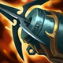
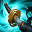
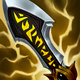
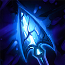
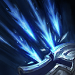
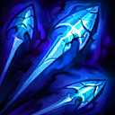
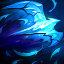

起手裝備
 長劍
長劍
改海妖、狂暴利刃、多明尼克、C44、無盡，先建立單體普攻與走位能力，再補穿甲和暴擊收益；颶風僅列多人正面團替換，不視為固定第二件。 長劍起手保留；五成裝與獨立二、三級鞋線已分開，未照抄外站 Galeforce 鞋附魔欄。




五件成裝與鞋子分開列示；起手與核心是購買路線，不是額外佔用的成裝欄位。鞋子完成時機仍依對線壓力與回城金錢調整。


保留致命節奏與兇蠻，斷切、血脈、骨甲支援連續普攻；暴擊裝可提高冰霜目標傷害，不只是加緩速。

預設閃現＋鬼步，配合冰霜目標普攻及海妖命中維持輸出距離；無法靠鬼步穿越硬控。選角時若對方爆發與控制過多，可把鬼步換光盾，連招不得假設同時擁有兩者。
加點優先：W > Q > E
W > Q > E：二技先滿降低消耗空窗，一技次滿提升持續火力；先累積專注才能開一技。

普攻與傷害技能施加冰霜；暴擊屬性提高對冰霜目標的傷害收益，暴擊也能強化緩速，不能視為暴擊裝只提供控制。
有後續版本調整的項目以較新數值為準；未列出者不代表完整技能成長表。

普攻累積專注，滿層後可主動消耗層數提高攻速，並將每次普攻轉為多段箭矢造成更高物理傷害。
有後續版本調整的項目以較新數值為準；未列出者不代表完整技能成長表。

朝前方扇形射出多支箭，對命中的敵人造成物理傷害並套用強化冰霜緩速。
有後續版本調整的項目以較新數值為準；未列出者不代表完整技能成長表。

派出獵鷹沿路提供視野，再次施放可在指定位置爆開並揭露附近區域與被命中的敵人。
射出可操控方向的全圖水晶箭，命中第一名敵方英雄時造成魔法傷害與暈眩；飛行距離越遠，暈眩時間越長。
補上連招啟動一技前需足夠專注的條件，短示意不代表兩次普攻必定能從零充滿；保留手機版可操控的大絕。
2技套用強緩速 → 普攻追擊 → 累積專注 → 1技啟動 → 連續箭矢
先用二技命中並減速，再靠普攻累積專注層數；一技啟動後維持走砍，不要為了追擊走進敵方控制距離。 一技前需已有足夠專注；示意中的普攻次數不保證從零層直接開啟。
4技暈眩 → 普攻緩速 → 2技補傷害 → 持續普攻 → 1技加速輸出
大絕命中後立即普攻維持緩速，二技與一技接續輸出；放箭前確認隊友能在暈眩期間進入攻擊範圍。 一技前需已有足夠專注；示意中的普攻次數不保證從零層直接開啟。
4技近距反控 → 2技扇形緩速 → 普攻拉開 → 1技強化 → 持續風箏 → 閃現保命
刺客貼近時不必追求遠距長暈，大絕近距命中就能爭取生存空間；持續緩速並保留閃現穿越關鍵技能。 一技前需已有足夠專注；示意中的普攻次數不保證從零層直接開啟。
利用萬箭齊發的扇形範圍與冰霜射擊緩速控制對線距離。專注射擊需要先由普攻累積層數，不要在尚未充能時硬打長對拼；艾希沒有位移，壓線前應用鷹擊長空確認河道與敵方打野動向。
海妖與狂暴利刃後，多明尼克第三件讓普攻更有效打前排；藉充能跑速與鬼步維持冰霜緩速，不必追求每次都箭到後排。放大絕前確認隊友能跟進，鷹擊長空先查側翼。
站在前排後方攻擊最近目標，普攻與二技持續套用緩速，讓敵人難以接近或撤退。大絕優先用來攔截刺客、鎖定走位失誤者或配合隊友開戰；鷹擊長空保留檢查側翼，避免無位移射手被繞後。
煞蜜拉能擋水晶箭，伊澤瑞爾能位移避開關鍵技能，圖奇從側翼進場會繞過正面緩速；先用視野找威脅再選擇開戰或反手。 威脅名單採同分路指南，較有利名單保留機制判斷並移除與威脅名單重疊者；現有輔助組合逐項複核技能互動後保留。
對局名單是機制與分路判斷，不代表固定勝率；需同時看雙方熟練度、兵線與陣容。
煞蜜拉能擋水晶箭，伊澤瑞爾能位移避開關鍵技能，圖奇從側翼進場會繞過正面緩速；先用視野找威脅再選擇開戰或反手。
下列輔助配合以技能互動為依據。瑟菈紛、布郎姆、枷蘿仍可配合本頁打法；先確認對手輔助的控制與兩邊召喚師技能，單一射手對局不代表必勝。
艾希緩速能讓瑟菈紛更容易強化控制，雙大絕也能遠距連鎖開戰。
艾希高頻普攻與持續緩速能快速疊滿震盪猛擊，反打能力很強。
持續緩速配合植物與纏繞能大幅限制走位，形成穩定消耗線。
依艾希的冰霜目標普攻及海妖命中路線選擇替換；先看實際死亡與傷害不足原因。
依敵方前排成形調整
觸發：敵方前排已形成高生命或高防禦，正面輸出受阻。
艾希保留前述五成裝加獨立鞋線；同一格不同情境擇一替換，不全部加購。
先保留預設穿甲核心，單一裝備格的調整不代表重買另一套。
保命格可提早
觸發：被同一輪突進秒殺，無法打出主要技能與普攻。
海克斯光學C44 → 守護天使
主要死亡原因是刺客或突進一次切入，且隊友能掩護復活位置。
海克斯光學C44整格換守護天使，犧牲部分冰霜目標普攻及海妖命中或持續防禦；復活後無人接應時先改善站位。
海克斯光學C44 → 魔提斯深淵
敵方主要擊殺來源是魔法爆發，且尚未裝另一件生命線裝備。
以海克斯光學C44換魔提斯處理魔法爆發；不把魔防誤當通用抗物理方案。
復活與魔法生命線處理的傷害不同，按實際威脅擇一；盾弓與魔提斯不重複保留。
先判斷控制能否解除
觸發：可解除的禁錮、暈眩等控制反覆中斷輸出。
海克斯光學C44 → 水星彎刀
可解除的控制反覆讓自己無法輸出，且閃現不能解決。
以海克斯光學C44換水星彎刀；主動要手動使用，不能解除擊飛或擊退，也不是舊版附魔。
水星彎刀是成裝，不佔鞋子升級；擊飛、擊退須靠預先走位或隊友保護。
治療已影響集火時
觸發：敵方持續治療抵銷集火，且團隊缺乏穩定重創。
多明尼克的問候 → 致死宣告
敵方治療或吸血持續影響勝負，隊友無法穩定施加重創。
致死宣告替換多明尼克；保留暴擊、穿甲與重創，不並排買兩件。
需要時先用死刑宣告過渡；不要把所有敵方英雄都當成必出重創的理由。
團隊無其他反盾者才承擔
觸發：大量反覆護盾持續阻止集火，且自己能穩定命中目標。
海克斯光學C44 → 巨蛇鋒牙
隊友無法施加反盾，且護盾確實抵銷主要輸出。
海克斯光學C44換巨蛇鋒牙會犧牲原末段功能；艾希仍需保留主要輸出核心，只有單一小護盾時不換。
反盾屬團隊分工，不為一個小盾放棄整條普攻或技能路線。
7.3c差異核對：7.3c直接平衡項目屬符文大亂鬥；本頁保留已核對的峽谷配置。版本更新不等於每位英雄都必須更換Tier或裝備。查看整輪校正範圍。
本頁校正版本：7.3c；校正日期：2026-10-25。
參考來源標示版本：7.3c
本輪核對官方版本差異、道具/符文引用、五成裝與鞋線、逐級加點及情境替換一致性。Tier及玩法屬本站編輯判斷，不是官方排名或台服勝率；未公開的全級技能表不推算。
評級理由：7.3c 維持 S（本站判斷）。由 A 校正為同分路參考 S；持續緩速、視野與可操控大絕帶來穩定功能，但仍需要保排。 7.3c 未改動此分路的英雄數值，沒有新證據只因版本號而升降。
Riot 官方資料 ↗ · Riot 官方資料 ↗ · Riot 官方資料 ↗ · Riot 官方資料 ↗ · Riot 官方資料 ↗ · WildRiftFire 參考攻略 ↗
7.3c 的直接英雄倍率改動屬符文大亂鬥；本召喚峽谷配置承接 7.3b。未把模式專屬增削轉為峽谷增削。
五件成裝、獨立鞋線、起手、核心、情境替換引用與一般符文列別均重新檢查；移除裝備不列入當前推薦。
歷史資料有後續調整時，以較新版本數值為準。
| 項目 | 調整前 | 調整後 |
|---|---|---|
| 每級物攻 | 2.65 | 4 |
| 基礎物攻 | 58 | 60 |
| 項目 | 調整前 | 調整後 |
|---|---|---|
| 緩速效果 | 15 / 17.5 / 20 / 22.5 / 25%（取決於等級） | 20 / 22.5 / 25 / 27.5 / 30%（取決於等級） |
| 額外傷害 | 10% + 100% × 暴擊率 ×（暴擊傷害 - 1） | 100% × 暴擊率 + 100% ×（暴擊傷害 - 2）× 暴擊率 |
| 項目 | 調整前 | 調整後 |
|---|---|---|
| 魔力消耗 | 50 / 50 / 50 / 50 | 30 / 30 / 30 / 30 |
| 項目 | 調整前 | 調整後 |
|---|---|---|
| 冷卻時間 | 16 / 13.5 / 11 / 8.5秒 | 15 / 12 / 9 / 6秒 |
| 魔力消耗 | 50 / 50 / 50 / 50 | 65 / 60 / 55 / 50 |
| 傷害 | 20 / 35 / 50 / 65 + 115%物攻 | 70 / 110 / 150 / 190 + 100%額外物攻 |